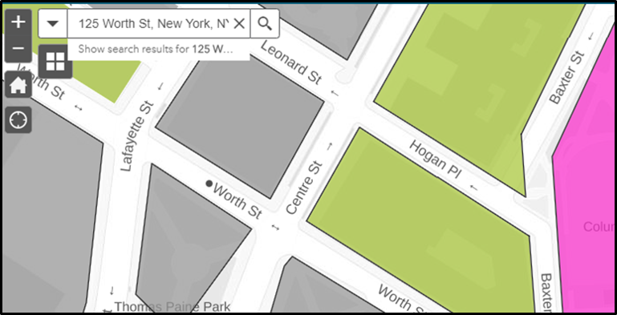
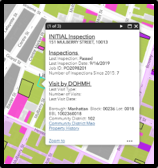

Health
311
Search all NYC.gov websites
Health
311
Search all NYC.gov websites
Health
311
Search all NYC.gov websites
Health
311
Search all NYC.gov websites
How To Use This Map
Welcome to New York City’s Rat Information Portal. This is a web-based mapping application that allows you to view rat inspection and action data collected by the NYC Health Department.
Basic Search
To get started, enter an address, zip code, neighborhood or Borough Block and Lot (BBL) in the search bar. You can also search by or zoom to a community board by turning on the toggle switch and selecting a Community Board from the drop-down menu. The map will re-center and zoom to that location.

Selecting a Property
After you have zoomed to your location, click on the property to get the inspection and action information.

Information Pop-Up
Click on any property for the inspection and Health Department action information. A pop-up will show the latest inspection type and result, and the number of inspections the property received since 2015. Properties that have not been inspected in the last six months will appear gray on the map. You can still view their inspection and action history by clicking on the property. You can also access property history by clicking on Open Data and the results will open in a new tab.You can refer to the Job ID in the pop-up for questions about a Health Department inspection or action.

Printing and Sharing
You can print and share the map.
Property History
[address goes here]
BBL [bbl goes here]
Frequently Asked Questions
What is the Rat Information Portal map?
The Rat Information Portal map is a web-based mapping application that allows you to view rat inspection and action data collected by the NYC Health Department.
What does it mean to search by BBL?
BBL stands for Borough Block and Lot and is the unique ID for every tax lot in NYC. The Health Department uses BBL to track and identify properties that may have many different street addresses or no street address. For properties without an address, such as parks and vacant lots, BBL is the best way to search.
What is the difference between inspection types?
- An initial inspection is conducted in response to a 311 complaint or a rat indexing inspection. In rat indexing, we inspect all the properties in a targeted area.
- A compliance inspection is conducted after a property fails its initial inspection. The Health Department will notify the property owner and order that the problem be addressed, and then conduct a follow-up (compliance) visit to see if the problem was corrected.
What do inspectors look for?
NYC Health Department inspectors visually inspect properties for signs of active rat and mouse activity and for conditions conducive to rodent activity. Signs of rodent activity are:
- Tracks
- Fresh Droppings
- Burrows
- Active Runs
- Fresh Gnawing
- Live or dead rats observed
What does “Passed at Last Inspection” mean?
A property “Passed at Last Inspection” if the inspector did not observe any active signs of rat and mouse activity, or conditions conducive to rodent activity, on the property at the time of the last inspection.
What does “Rat Activity at Last Inspection” mean?
A property is marked “Rat Activity at Last Inspection” when an inspector observed active signs of rat and mice activity, or conditions conducive to rodent activity, on the property at the time of the last inspection. When these conditions are observed, the property fails the inspection.
What does “Failed for Other Reason” include?
- Exposed/uncontained garbage
- Harborage conditions, such as clutter or overgrown vegetation
- Mice
What happens after an inspection?
If inspectors find signs of rat activity or conditions conducive to rats on the property, the property owner will receive a Commissioner’s Order to Abate (COTA). The letter will include an inspection report detailing the findings, guidance on how to fix the problems and the Health Department’s contact information. Owners are allowed time to remediate.
About 10 days after an order is mailed to the property owner, the Health Department will conduct a follow-up (compliance) inspection. If the conditions have not been corrected, the property owner will receive a summons. The Health Department may also treat properties when the property owner fails to do so. Property owners will be billed for these extermination services.
What if a property has not been inspected in the last six months?
Properties that have not been inspected in the last six months will appear gray on the map. You can still view their inspection history by clicking on the property.
What if a property has no NYC Health Department Action information listed?
Properties that have no NYC Health Department Action information listed have not received any treatment by the NYC Health Department since 2015.
What are the NYC Health Department Actions?
- Baiting: Health Department staff will apply rodenticide (rodent poison) or monitor the property to see if past baiting is working.
- Clean up: Health Department staff will remove garbage and clutter from the property.
- Stoppage: Health Department staff will collapse or seal rat burrows in structures or soil.
What if I have a question about a NYC Health Department inspection or NYC Health Department action?
You can refer to the Job ID in the Information Pop-Up if you have questions about an inspection or action. Questions including a Job ID can be sent to ratportal@health.nyc.gov
How can I submit a rodent complaint?
You can submit a complaint online through 311.
Include a description of the problem and the address of the location. Health Department inspectors can only inspect those parts of the property accessible to them. If the problem is in an area that is closed to the public, such as in an apartment, basement or backyard, include your contact information so that the inspector can schedule the inspection when you are there to grant access to the property.
NYC
City of New York. 2020 All Rights Reserved,
NYC is a trademark and service mark of the City of New York